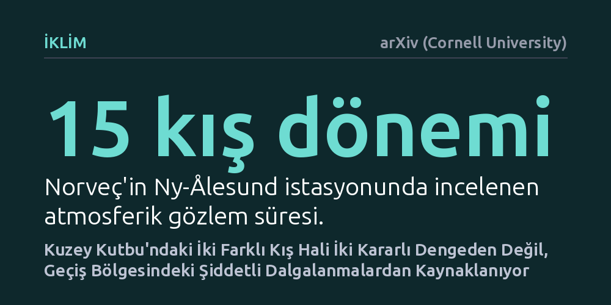

IKLIM · arXiv (Cornell University) · 2026-10-22
Kuzey Kutbu kış atmosferinde gözlenen açık ve bulutlu iki farklı durumun arkasında iki kararlı denge dinamiğinin bulunup bulunmadığı araştırıldı. Norveç'teki 15 kışlık veriyi inceleyen araştırmacılar, iki ayrı denge yerine tek bir kararlı nokta ve bulutlanma geçişinde yükselen rastgele dalgalanmalar buldu.
Kutup iklimindeki ani rejim geçişlerinin sanıldığı gibi geri dönüşü zor devrilme noktalarından değil, neme bağlı rastlantısal süreçlerden kaynaklanabileceğini gösteriyor.

Kuzey Kutbu'nda kış ayları boyunca güneş hiç doğmaz; ancak bu zifiri karanlık tekdüze bir hava anlamına gelmez. Bölgedeki atmosfer gözlemleri, kış boyunca havanın neredeyse hiçbir zaman orta derecede bulutlu kalmadığını gösteriyor. Gökyüzü ya ısının hızla uzaya kaçtığı tamamen berrak ve dondurucu bir halde bulunuyor ya da kalın bulut tabakasının yeryüzünü battaniye gibi örterek sıcaklığı hapsettiği bütünüyle kapalı bir durumda kalıyor. İklim biliminde bu durum çift tepeli (bimodal) dağılım olarak adlandırılıyor.
Yıllardır iklim araştırmacıları, atmosferin bu iki zıt durum arasında gidip gelmesini "çift kararlılık" (bistabilite) kavramıyla açıklıyordu. Bu kabule göre kutup atmosferi bir çanağın içindeki iki farklı çukur gibi davranıyor; sistem bir eşik aşıldığında bir çukurdan diğerine düşüyor ve dışarıdan çok güçlü bir etki gelmedikçe orada kilitli kalıyordu. Ancak bu teorinin gerçekten geçerli olup olmadığı, kutup ikliminin gelecekteki davranışını doğru öngörmek açısından kritik bir soru işaretiydi.
Araştırmacılar, bu köklü varsayımı sınamak için Norveç'in Svalbard takımadalarında yer alan Ny-Ålesund istasyonunun 15 kış dönemi boyunca topladığı zengin veri setini mercek altına aldı. Buradaki temel amaç, sadece havanın ne zaman bulutlu veya açık olduğunu saymak değil; atmosferi yöneten yönlendirici kuvvetler ile rastlantısal savrulmaları matematiksel olarak birbirinden ayrıştırmaktı.
Bu ayrımı yapabilmek için istatistiksel fizikte kullanılan Kramers-Moyal açılımına dayalı bir sürüklenme-difüzyon modeli kuruldu. Model, atmosferik değişimleri iki ana bileşene böldü: Sistemi belirli bir duruma doğru çeken deterministik sürüklenme kuvveti ve sisteme dışarıdan çarpan rastgele dalgalanmalar (difüzyon). Böylece kutup atmosferinin gerçekten iki ayrı kalıcı denge çukuruna sahip olup olmadığı doğrudan gözlem verisi üzerinden test edildi.
Analiz sonuçları şaşırtıcı bir gerçeği ortaya çıkardı: Atmosferi yönlendiren deterministik kuvvetlerde iki ayrı kararlı denge noktası yoktu; sistem aslında tek bir denge noktasına sahipti. Yani atmosfer iki farklı denge çukuru arasında sıkışıp kalmıyordu. Peki o halde gökyüzü neden sürekli ya tamamen açık ya da tamamen bulutlu görünüyordu? Yanıt, rastlantısal dalgalanmaların şiddetinde gizliydi.
Gözlemler, rastgele dalgalanmaların gücünün her an aynı olmadığını, tam açık hava ile bulutlu hava arasındaki geçiş sınırında tepe noktasına ulaştığını gösterdi. Yazarlar durumu "gözlenen rejimler, açık-bulutlu geçişine yakın en yüksek genliğe ulaşan duruma bağlı stokastik dalgalanmalara bağlanabilir" şeklinde özetliyor. Hava kütlesi geçiş bölgesine yaklaştığında artan dalgalanmalar sistemi hızla uçlara itiyor; bulut oluştuktan sonra veya hava tamamen kuruduğunda ise dalgalanmalar duruluyor. Rüzgâr yönü de bu süreci pekiştiriyor: Güneybatıdan gelen nemli ve yükselen hava akımları bulutlu hali beslerken, kuzeydoğudan esen kuru rüzgârlar açık gökyüzünü destekliyor.
Araştırma ekibi, elde ettikleri istatistiksel sonuçları fiziksel bir süreçle de temellendiriyor. Havadaki nem belirli bir doygunluk eşiğini aşana kadar gözle görülür bir bulut oluşmuyor; eşik aşıldığı anda ise doğrusal olmayan ani bir yoğunlaşma başlıyor. Bu fiziksel mekanizma, havadaki sıradan ve dengeli nem dalgalanmalarının, bulut örtüsü tarafında aşırı ve duruma bağlı sıçramalar olarak yansımasına yol açıyor.
Bu bulgu, Kuzey Kutbu'nda havanın bir rejimden diğerine geçişini anlamak için geri dönüşü zor devrilme noktaları varsayımına her zaman ihtiyaç olmadığını gösteriyor. İklim simülasyonları kutup bulutlarının davranışını iki kararlı denge teorisi yerine neme bağlı değişken dalgalanma dinamikleriyle modellediğinde, kutup ısınmasına ve iklim krizine ilişkin tahminlerin güvenilirliği de belirgin biçimde artacaktır.